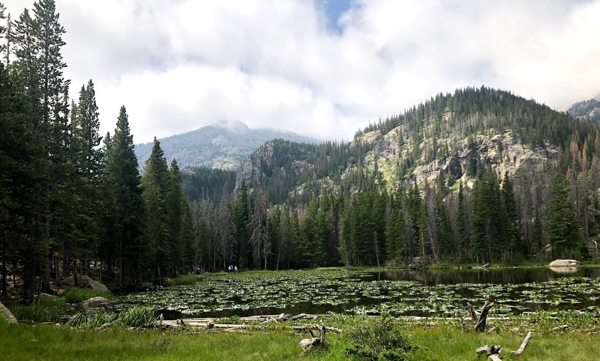
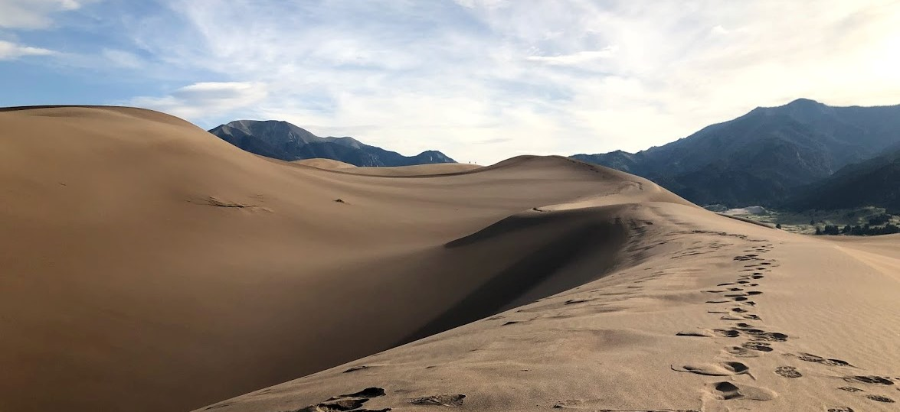

Only been hear for a bit -- still figuring it out, but it involves a lot of medical stuff.
Web Developer and Desktop Support Specialist
The Nelson-Atkins Museum of Art - Jul 2014 – Jun 2019
I assumed numerous tasks with the museum including project lead for Adobe Creative Cloud installation,
purchasing
and troubleshooting including cost benefit analysis and return on investment calculations for Adobe vs.
alternative software options.
I also managed 200+ Apple/Mac/iOS devices within the organization, including purchasing, setup, MDM, and
desktop
support within an Active Directory environment, and provided desktop support for Windows PCs, Microsoft
365 and
the CAD software VectorWorks.
I collaborated on the development and roll out of the museum's WordPress internet site, and created
in-gallery
interactive websites utilizing the Foundation and Bootstrap wire frames.
I acted as the on-site technical representative through alpha and beta testing for the Quire online
catalog
software developed by the Getty Museum. I provided support and onsite development for the audio guide
applications Culture Connect, Detour and Smartify.

Rocky Mountain National Park, August 2018
Associate Editor
USAonRace - Nov 2012 – Jan 2015
I acted as a copy editor, technical support and social media editor for a USAonRace web site. Using the
Drupal
CMS, I posted articles and edited images using Adobe Photoshop and GIMP until the closure of the web
site in
early 2015.
Help Desk Specialist
Apple - Nov 2012 – Nov 2013
I provided remote customer service support for Apple computers, wireless device and software via the
phone and
chat support platforms. I helped owners of Apple products with setup, operation, troubleshooting and
repair of
Mac computers, iOS devices, wireless networking equipment and software.
I also created presentations detailing internal procedure and technical support for team members, and
supported
new hires in technical and procedural etiquette and best-practices. I maintained high standards of
customer
satisfaction, including over 95% positive reviews from customer surveys.
Web Designer
BOLD Internet Solutions - Aug 2008 – Aug 2012
I performed numerous tasks for BOLD clients, including Russell Stover, Halls, Peruvian Connections,
Healthcare
Foundation of Greater Kansas City (HCF), newEar Contemporary Music Ensemble, Children’s Center for the
Visually
Impaired (CCVI), Dam Safety Action, and CFLeads. I maintained and designed customer web sites to enhance
usability, accessibility, functionality, and customer impact, updated customer sites to newer standards
to
improve compatibility, designed and tested multiple HTML email campaigns to increase customer contact
for
clients.
I edited images and video to increase web site appeal and interactivity for site visitors, developed
sites based
on the Drupal and Wordpress frameworks to provide flexible, easy-to-maintain sites for clients, and
created
customized, non-framework based sites using modern web standards and design applications from Photoshop
design
mock-ups. I collaborated extensively with designers, programmers, and client representatives at all
phases of
site implementation and maintenance.
I researched, reviewed, and implemented best practices for projects and technologies, provided copy
editing and
technical writing services to clients to improve site flow, readability, and content accessibility,
wrote
tutorials, provided help-desk support, and trained clients to operate Drupal user-interfaces and Adobe
Contribute web management software.

Great SandDunes National Park, August 2018
Webmaster
University of Kansas, Office of Research - Dec 1998 – Dec 2007
During the Wild West days of the early Internet, I acted as webmaster, designer and content manager for
numerous
sites at the University of Kansas Office of Research and Graduate Studies (RGS), including Explore
Research
Magazine, Office of Research and Graduate Studies, Business and Industry Outreach, Office of Research
Integrity
and the KU Distinguished Professors.
I designed and managed content for all RGS web sites while maintaining strict adherence to Section 508
Accessibility requirements and other best practices for early web development and design. I also
administered
and secured Windows web servers, supported end-users using both Windows and Mac workstations, managed
student
employees.
Education
BA in History | University of Kansas | Lawrence, KS | 1995, Minored in Creative Writing and
Painting/Graphic Design
Graduate courses in Journalism | University of Kansas |Lawrence, KS | 2006-2007
History of American Journalism – Designed site, edited existing copy
and contributed new written and visual content as part of a Master’s project in journalism at the
University of Kansas
EMU Theatre (Lawrence, Kansas) – Volunteered as an actor, set designer, producer, writer and web
developer for an all-volunteer theatre company. Also acted and provided technical support for Theatre
Lawrence. 2004-2010.
Disc Jockey at KJHK – college radio station at the University of Kansas.
January-August, 2007